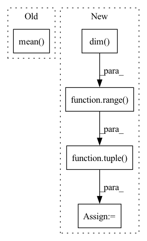

Pattern ID :31727

Before Change
else:
if mask.dtype != torch.bool:
mask = mask.to(torch.bool)
return 1. - torch.square(y_hat[mask] - y[mask]).sum() / (torch.square(y[mask].mean(dim=0) - y[mask]).sum())
// TODO align with others
After Change
// compute mean(s) of target data
if mean_axis is None:
mean_axis = tuple(range(y.dim()))
mean_val = torch.mean(y, dim=mean_axis, keepdims=True)
variance = mse(mean_val, y, mask, reduction, nan_to_zero)
return 1. - (mse_ / variance)
In pattern: SUPERPATTERN
Frequency: 3
Non-data size: 5
Instances
Fragment ID: 92597204
Project Name: torchspatiotemporal/tsl
Commit Name: 4ab8a82b585611b1fb1662b5274beb705c89e907
Time: 2022-11-17
Author: stefano.imoscopi@usi.ch
File Name: tsl/metrics/torch/functional.py
M Class Name: AnonimousClass
N Class Name: AnonimousClass
M Method Name: r2(6)
N Method Name: r2(3)
M Parent Class:
N Parent Class:
M File Name: tsl/metrics/torch/functional.py
N File Name: tsl/metrics/torch/functional.py
M Start Line: 283
M End Line: 311
N Start Line: 282
N End Line: 324
'>
Before Change
eps = self.eps
loss = - target * torch.log(input + eps) - (1 - target) * torch.log(1 - input + eps)
loss = loss.squeeze(dim=1).mean(dim=1)
if batch_mean:
loss = loss.mean(dim=0)
After Change
loss = - target * torch.log(input + eps)
loss = loss.sum(dim=self.class_dim)
n_dims = loss.dim()
dim = tuple(range(1, n_dims))
if reduction == "mean":
loss = loss.mean(dim=dim)
elif reduction == "sum":
'>
Fragment ID: 92597207
Project Name: tky823/dnn-based_source_separation
Commit Name: 56f95a42611aeaeb3499f097d347a17787656474
Time: 2021-12-04
Author: delta9guitar97@gmail.com
File Name: src/criterion/entropy.py
M Class Name: CrossEntropy
N Class Name: CrossEntropy
M Method Name: forward(4)
N Method Name: forward(4)
M Parent Class: nn.Module
N Parent Class: nn.Module
M File Name: src/criterion/entropy.py
N File Name: src/criterion/entropy.py
M Start Line: 44
M End Line: 47
N Start Line: 55
N End Line: 69
'>
Before Change
eps = self.eps
loss = - target * torch.log(input + eps) - (1 - target) * torch.log(1 - input + eps)
loss = loss.squeeze(dim=1).mean(dim=1)
if batch_mean:
loss = loss.mean(dim=0)
After Change
loss = - target * torch.log(input + eps) - (1 - target) * torch.log(1 - input + eps)
n_dims = loss.dim()
dim = tuple(range(1, n_dims))
if reduction == "mean":
loss = loss.mean(dim=dim)
elif reduction == "sum":
'>
Fragment ID: 92597201
Project Name: tky823/dnn-based_source_separation
Commit Name: 56f95a42611aeaeb3499f097d347a17787656474
Time: 2021-12-04
Author: delta9guitar97@gmail.com
File Name: src/criterion/entropy.py
M Class Name: BinaryCrossEntropy
N Class Name: BinaryCrossEntropy
M Method Name: forward(4)
N Method Name: forward(4)
M Parent Class: nn.Module
N Parent Class: nn.Module
M File Name: src/criterion/entropy.py
N File Name: src/criterion/entropy.py
M Start Line: 22
M End Line: 23
N Start Line: 21
N End Line: 34